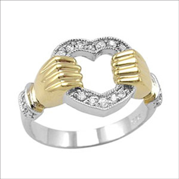
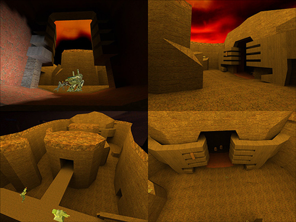
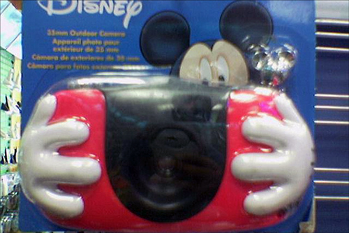
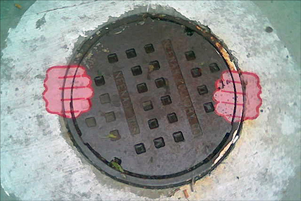
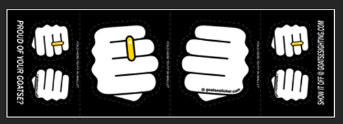

Goatse ist überall
Goatse (← Link klicken auf eigene Gefahr!) ist ja so etwas wie ein Phänomen im Internet, nachdem er auf der Website goatse.cx seinerzeit tief hat blicken lassen. Seitdem hat er viele Fans, Bewunderer und sicherlich auch Nachahmer. Seine Pose wurde unzählig oft referenziert - zum Teil auch unfreiwillig.
Hier ein paar Beispiele, die ich zusammentragen konnte:
Goatse — Ehering

(via Bits&Pieces)
Goatse — Quake-Level

(goatse - the Quake level von ClintJCL)
Goatse — Obama-Logo
(Obama-Goatse logo (320x240) von sfslim)
Goatse — Disney-Spielzeug

(Mickey Camera Goatse von TheCX)
Goatse — Street-Art

Goatse — Flickr-Gruppe
Wer sich übrigens dazu durchgerungen hat, obigen Link zu drücken, und Goatse vorher noch nie in seinem Leben gesehen hat, sollte eine/n Bekannte/n beauftragen, das ganze visuell festzuhalten. Die Ergebnisse können dann in der Flickr-Gruppe "First Goatse" gepostet werden. Ist ja immerhin ein bedeutender Augenblick im Leben eines Menschen.
(Dog's First Goatse von callumalden)
Goatse — Sticker

Wer seine Umgebung goatse-technisch aufpeppen möchte, greift am besten zu den Goatse-Stickern. Ich überlege selbst, ob ich mir einen Satz bestellen soll. Falls jemand auch welche haben möchte, einfach in den Kommentaren Interesse anmelden. Vielleicht kann man eine Sammelbestellung machen, oder so…
goatse.cx
Die Domain goatse.cx steht zum Verkauf. Wer also das durchaus schwere Erbe des Goatse antreten möchte und über ein entsprechend geschmeidiges Rektum verfügt, sollte zuschlagen. Andererseits ist diese Domain sicherlich auch eine Zierde für jeden Gebrauchtautohändler oder Online-Wollsockenversand. Einfach vielseitig einsetzbar.
Goatse — Links
http://de.wikipedia.org/wiki/Goatse.cx
http://en.wikipedia.org/wiki/Goatse.cx
http://goatse.cx/
http://www.goatse.org/
9 Kommentare zu "Goatse ist überall"
- Externe Links im selben Fenster öffnen
- Externe Links in neuem Fenster öffnen
Go Atze
Schade das man sich dafür (mal wieder) bei Flickr anmelden muss. Schade auch das eigentlich erst am Ende des Beitrags einigermaßen klar wird, was goatse eigentlich ist (so man denn nicht bei Flickr angemeldet ist). Mir wars vorher völlig unbekannt.
Herschel Rubinstein
ich hoffe, das bild hat dich nicht zu sehr verstört. aber warum bei flickr anmelden, das bild müsste eigentlich auch so zu sehen sein…?
Lex Dildo
Lex wird den Rest des Tages weinend und hospitalisiernd in der Fötus-Position auf dem Fußboden verbringen. Danke!
Herschel Rubinstein
hast du es fotografisch festgehalten??
TediousNilsen
lex, was ist los? ich dachte, du hast schon zwei kinder auf dem rücksitz eines taxis zur welt gebracht. das hättest du abkönnen müssen. ich fands jetzt nicht so beeindruckend.
mkultra
fnord narf goatse mindfuck
eine neue religion ist geboren!
gira
images.google.de/images?q=goatse&um=1&ie=UTF-8&sa=N&tab=wi
hat mir gestern abend ein kolleg gezeigt
schon sehr krass was manche so mit ihren körper anstellen...
Julle
Find ich voll gut, so eine Goatse.

PabstMan